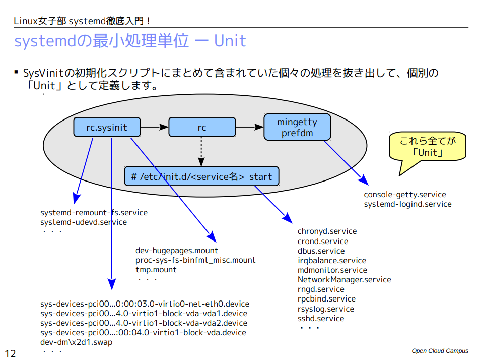

systemd
SysVinitとsystemdの違い
SysVinitとsystemdの大きな違いは並列処理が出来るかにある。SysVinitはinitプロセスを最初に実行し、initプロセスはinittabファイルに記載されているプロセスを順番に実行していくシェルスクリプトである。それに対しsystemdでは初めにsystemdプロセスが起動し、default.targetを解析し依存関係を処理してシステムの起動を行う。システムの起動処理はUnitという処理単位で管理されています。例えばサービスを起動するUnitやファイルシステムをマウントとするUnitなどがあります。SysVinitの初期化スクリプトにまとめて含まれていた個々の処理を抜き出して、個別の 「Unit」として定義ています。unitの概念は以下の画像がわかりやすいです。(こちらがわかりやすいです。)
unitの種類と定義ファイル
| 種類 | 説明 |
|---|---|
| srevice | 各種サービスの起動 |
| target | 複数のunitをグループ化して依存関係や順序関係を簡潔にまとめる |
| mount | 有効化するとマウントされる。 |
| swap | 有効化するとSwap領域が有効になる。 |
| device | udevがデバイスを認識すると有効化される。 |
次の例はdefault.targetの中身である。(正体はランレベルに対応するターゲットへのシンボリックリンク)
[root@localhost ~]# cat /etc/systemd/system/default.target
[Unit]
Description=Graphical Interface
Documentation=man:systemd.special(7)
Requires=multi-user.target
Wants=display-manager.service
Conflicts=rescue.service rescue.target
After=multi-user.target rescue.service rescue.target display-manager.service
AllowIsolate=yes
[Unit]
Description=Graphical Interface
Documentation=man:systemd.special(7)
Requires=multi-user.target
Wants=display-manager.service
Conflicts=rescue.service rescue.target
After=multi-user.target rescue.service rescue.target display-manager.service
AllowIsolate=yes
依存関係を設定するにはいくつかの方法があるがその一つに[Unit]タブの中にRequires= や Wants= を追記する方法がある。どちらも依存関係を示すパラメータであるが違いは「Requires」の場合は指定Unitが起動に失敗すると自身のUnitも起動に失敗（停止）するが、「Wants」の場合には指定Unitが起動に失敗しても、自身のUnitの起動を継続します。
Conflicts= は一緒に起動してはいけないunitを指定します。
After= A B C の場合A B Cを起動した後自身を起動させます。